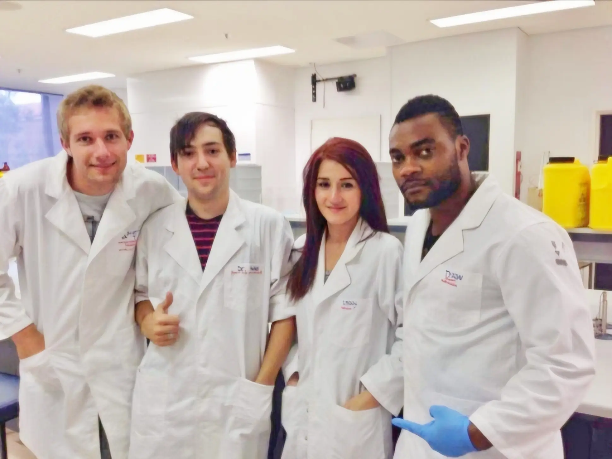

Mission-Driven Environmental Experts
Committed to helping our partners overcome compliance challenges through expert soil analysis and strategic waste management across Victoria.
Our Directive
The Insight Enviro Advantage
At Insight Environmental Services, our directive is to offer the best cost-effective compliance solutions—from the starting survey to final transport. We provide added assurance that every load of material is adequately assessed via AS4482.1 standards.
We utilize IWRG621 and EPA Pub 1828.2 best practices, acting as a strategic liaison that unites waste generators with their most suited lawful place.
Values We Live By
- ● Rapid & Accurate Reporting
- ● Deep Collaboration with Partners
- ● Unwavering Reliability
- ● Passion for Spectacular Results
Chain of Responsibility
Under our scope, waste generators, transporters, and lawful receivers are linked as equal and approachable members of the Chain of Responsibility. We ensure ethical and affordable business practices are upheld for all parties involved.
Ethical Practices
Strict adherence to Victorian environmental law and EPA guidelines.
Strategic Liaison
Connecting you with the most suited lawful place for material disposal.
Expert Consultation
Constantly improving our methodologies to serve you better.
Ready to start your next project?
Save on call-out fees by filling out our online questionnaire.
Start QuestionnaireOur Consultants
Our team was hand-picked across all disciplines of the responsibility chain, and it is our continued prerogative to offer insight and clarity into an enterprise that is often seen as foggy and difficult to navigate for those uninitiated with its everyday complexity.
Insight Environmental Services provides trusted environmental consulting in Melbourne, specialising in soil testing, waste classification and site investigations.

Our Leadership Team
Waste material soils require to be managed in accordance with the waste hierarchy of avoidance, reuse, recycling, recovery of energy, treatment, containment and disposal as set out in the Environment Protection Act 1970.
Learn more about Waste Disposal Categories: Publication 1828.2 →
Developed by Clean Fill, Construction & Demolition Recycling and Prescribed Industrial Waste Environmental compliance personnel hailing from a top 5 Global Waste Management company. We recruit practices that only select individuals acquire from within a world-leading organisation, and multiple years of experience in the field.
Scott Beith
Co-Founder & Environmental Scientist
Christian Diaz
Co-Founder & Chief Information Officer